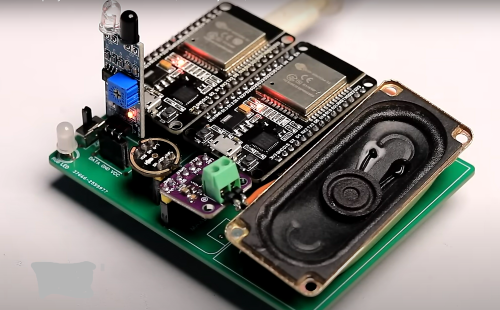
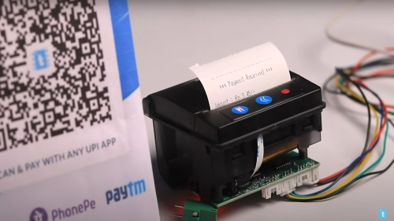

ChatGPT voice assistant using an ESP32

Description of the project. In this project, you'll create a ChatGPT-powered voice assistant using an ESP32 board, integrating AI with IoT technology. The setup includes an ESP32, a microphone module for voice input, a speaker for responses, and Wi-Fi connectivity to interact with the ChatGPT API. You'll capture audio, convert it to text, process it through ChatGPT, and convert the response back to speech. Additional features can include custom commands, sensor data integration, and wake word detection. This project is ideal for enhancing IoT applications with AI-driven, hands-free interaction.
UPI Payment Slip Printer using ESP32

Description of the project.
In this project, you'll create a UPI payment slip printer using an ESP32 board, integrating it with a thermal printer and a display module. The ESP32 connects to a UPI payment gateway via Wi-Fi to capture transaction data in real-time, displaying transaction details and printing receipts on demand. The setup involves configuring the ESP32 environment, integrating the printer and display, and handling Wi-Fi connectivity for seamless communication with the UPI gateway. This project provides a tangible receipt for digital transactions, ideal for enhancing customer service in retail environments by offering immediate proof of UPI payments.